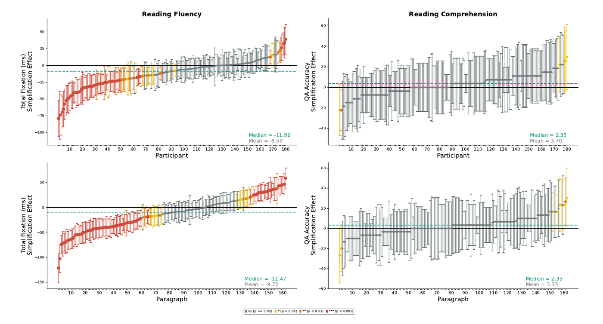

The Effect of Text Simplification on Reading Fluency and Reading Comprehension in L1 English Speakers
Faculty of Data and Decision Sciences, Technion – Israel Institute of Technology
CogSci 2025 · Oral
Abstract
Text simplification is a common practice for making texts easier to read and easier to understand. To which extent does it achieve these goals, and which participant and text characteristics drive simplification benefits? In this work, we use eye tracking to address these questions for the first time for the population of adult native (L1) English speakers. We find that 42% of the readers exhibit reading facilitation effects, while only 2% improve reading comprehension accuracy. We further observe that reading fluency benefits are larger for slower and less experienced readers, while comprehension benefits are more substantial in lower comprehension readers, but not vice versa. Finally, we find that high-complexity original texts are key for enhancing reading fluency, while large complexity reduction is more pertinent to improving comprehension. Our study highlights the potential of cognitive measures in the evaluation of text simplification and distills empirically driven principles for enhancing simplification effectiveness.
Key Findings

- 42% of readers read simplified texts more fluently; only 2% improve comprehension accuracy.
- Fluency benefits are larger for slower and less experienced readers.
- Comprehension benefits are larger for lower comprehension readers.
- High-complexity originals drive fluency gains; large complexity reduction matters more for comprehension.
BibTeX
@inproceedings{gruteke2025effect,
title = {The Effect of Text Simplification on Reading Fluency and Reading Comprehension in L1 English Speakers},
author = {Gruteke Klein, Keren and Shubi, Omer and Frenkel, Shachar and Berzak, Yevgeni},
booktitle = {Proceedings of the Annual Meeting of the Cognitive Science Society},
volume = {47},
year = {2025}
}